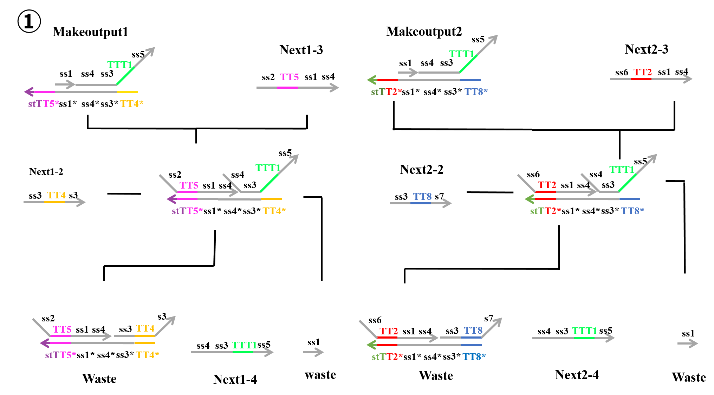
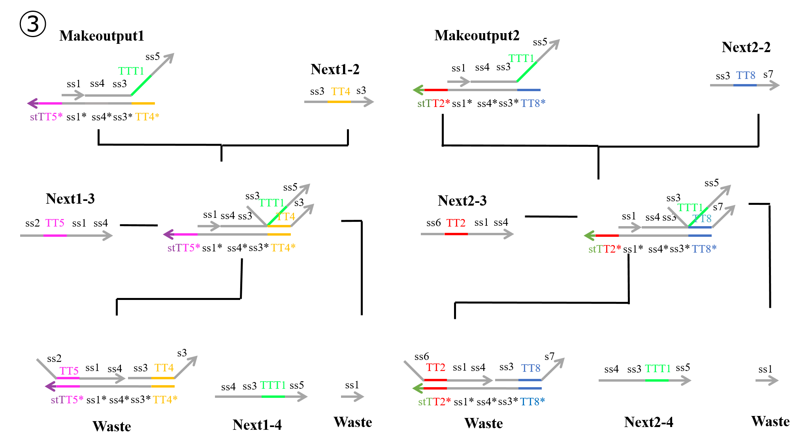
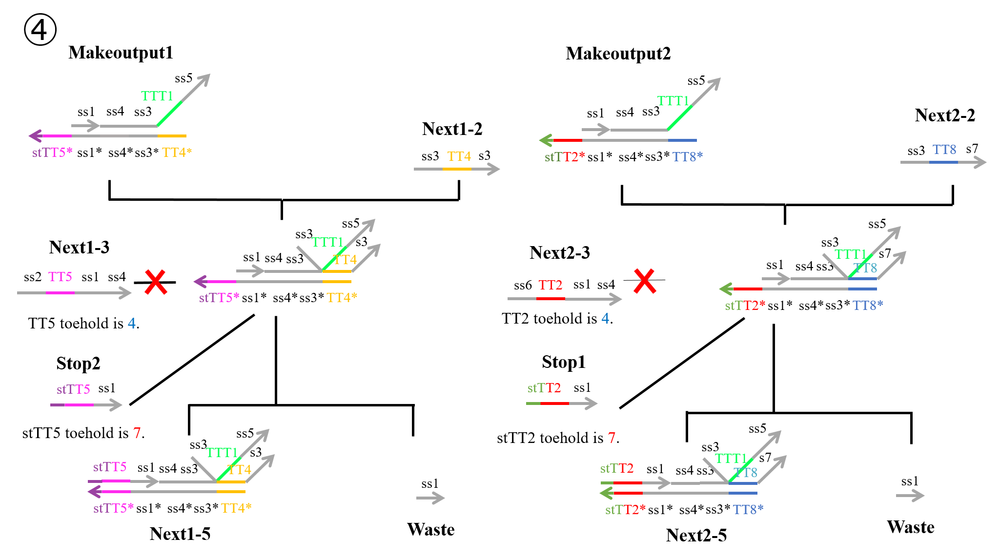
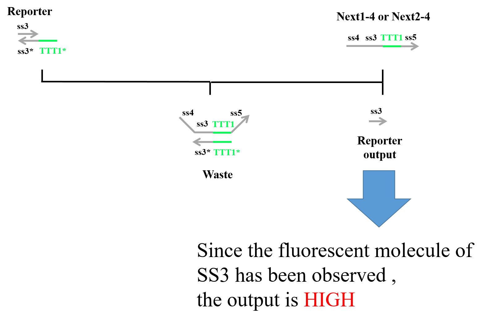

|
Design
1. What is logic gate
It is the circuit which does logic operation.
In general, logic gate has two Inputs, and divide them into High and Low by the threshold.
Logic circuit is used as the smallest modules which compose all digital circuit, so it is essential for recent electric products.
In other words, when we produce some systems, we need the smallest modules, so we think need the smallest modules when we produce some systems in a DNA reaction system.
Therefore, we need logic gate when we produce something with DNA.
AND, OR, NOT is in logic gate.
Their work is expressed by a truth table.
AND, OR, and NOT are called basic logic gates.
In general, we can make one-step large module, XOR, NOR, and NAND by combining basic logic gates.
Moreover, we can make larger module, flip-flop, register, and so on by combining XOR, NOR, NAND, and basic logical gates.
We can make a product such as a microcomputer by repeating combining modules. Because Computer is a machine for computing literally,
it needs modules for computing. One of them is an accumulator.
For making an accumulator, we need XOR.
Like this, XOR is an important module, so we make XOR.
2. What is XOR
XOR works like the next truth table.
Now the XOR which we regard a concentration of DNA as Inputs because the XOR is made in DNA reaction system.
Only when High or Low is inputted, Output becomes High. When Inputs are High-High or Low-Low, Output becomes Low.

As mentioned in 1, basically, a big module is made by combining small modules.
At first, we consider making XOR by combining AND, OR, NOT, but it needs many DNA strands for making and is a complex reaction system.
A complex reaction system is bad for making something. The reason is, in DNA reaction system, a complex condition tends to occur the reaction which we don’t hope.
Moreover, the more complex a reaction system is, the later a reaction velocity is.
For solving the weak points, we contrived DNA Interference Detector.
We explain DNA Interference Detector in 3.
3. DNA Interference Detector
3.1 What is DNA Interference Detector
We named the XOR which we contrived DNA Interference Detector.
DNA Interference Detector solved the weak points XOR by combinational circuit.
XOR combined by AND, OR, and NOT needs many DNA strands (83 strands), but Our DNA Interference Detector can performs alone the function of XOR, and it is made in a few strands (31 strands).
Moreover, DNA Interference Detector is faster than combinational XOR about a reaction velocity.
The difference about a reaction velocity is 15o minutes.
3.2 Reaction path
We designed DNA Interference Detector based on strand displacement reactions.
This gate is composed of four DNA strand displacement reaction processes.
We explain each of reaction processes below.
First Process:
As shown Figure 3-1, “Input1” including a ss1 TT1 s3 sequence is single-strand DNA (ssDNA) and “Makestopper1” is double-stranded DNA (dsDNA) that includes a toehold domain TT1*.
”Input1” causes a strand displacement reaction based on TT1, yielding “Stop1”, “Next1-1” and “Waste”.
Similarly, “Input2” causes a strand displacement reaction with “Makestopper2” and results in “Stop2”, ”Next2-1” and “Waste”.

Second Process:
Next, “Next1-1” produced at First Process and “Makecutter1” cause a stand displacement reaction and “Makecutter1” is replaced by “Next1-2”, ”Next1-3” and “Waste”.
In the same way, “Makecutter2” causes a strand displacement reaction with “Next2-1” produced at First Process, creating “Next2-2”,”Next2-3”and “Waste”.
Figure 3-2 shows a strand displacement model of Second Process.
 |
Third Process:
In this step, four kinds of reactions can occur.
We explain each of reactions below.
①
“Next1-3” yielded at Second Process and “Makeoutput1” cause a stand displacement reaction based on TT5 and then “Next1-2” causes a strand displacement reaction based on TT4.
As a result, two kinds of “Waste” and “Next1-4” are produced.
Similarly, “Next2-3” yielded at Second Process and “Makeoutput2” cause a stand displacement reaction based on TT2 and then “Next2-2” causes a strand displacement reaction based on TT8.
As a result, two kinds of “Waste” and “Next2-4” are produced.
|  |
②
“Stop2” yielded at First Process and “Makeoutput1” cause a stand displacement reaction based on TT5 and then “Next1-2” causes a strand displacement reaction based on TT4.
As a result, “Waste” and “Next1-6” are produced. Similarly, “Stop1” yielded at First Process and “Makeoutput2” cause a stand displacement reaction based on TT2 and then “Next2-2” causes a strand displacement reaction based on TT8.
As a result, “Waste” and “Next2-6” are produced.
③
“Next1-2” yielded at Second Process and “Makeoutput1” cause a stand displacement reaction based on TT4 and then “Next1-3” causes a strand displacement reaction based on TT5.
As a result, two kinds of “Waste” and “Next1-4” are produced. Similarly, “Next2-2” yielded at Second Process and “Makeoutput2” cause a stand displacement reaction based on TT8 and then “Next2-3” causes a strand displacement reaction based on TT2.
As a result, two kinds of “Waste” and “Next2-4” are produced.
|  |
④
“Next1-2” yielded at Second Process and “Makeoutput1” cause a stand displacement reaction based on TT4 and then “Stop2” causes a strand displacement reaction based on TT5.
As a result, “Nexr1-5” and “Waste” are produced.
Similarly, “Next2-2” yielded at Second Process and “Makeoutput2” cause a stand displacement reaction based on TT8 and then “Stop1” causes a strand displacement reaction based on TT2.
As a result, “Next2-5” and “Waste” are produced.
|  |
In ① and ②, “Makeoutput1” causes a strand displacement reaction based on TT5 and then based on TT4.
”Makeoutput2” causes a strand displacement reaction based on TT2 and then based on TT8.
On the other hand, in ③ and ④ “Makeoutput1” causes a strand displacement reaction based on TT4 and then based on TT5.
“Makeoutput2” causes a strand displacement reaction based on TT8 and then based on TT2.
As shown Figure3-4 or Figure3-6, toehold domain stTT5* of “Makeoutput1”, stTT2* of “Makeoutput2”, stTT5 of “Stop2” and stTT2 of “Stop1” consist of seven bases.
Against it, toehold domain TT5 of “Next1-3” and TT2 of “Next2-3” consist of five bases.
Therefore, in terms of length of toehold, a strand displacement reaction based on stTT5 is faster than that based on TT5.
A strand displacement reaction based on stTT2 is similarly faster than that based on TT2.
In other words, four kinds of reactions(①-④) depend on concentration of “Next1-3”, that of “Stop2”, that of “Next2-3”, and that of “Stop1”.
When a concentration of “Next1-3” is higher than that of “Stop2”, reaction① or reaction③ occur.
On the other hand, if a concentration of “Stop2” is higher than that of “Next1-3”, reaction② or ④ occur.
As the same way, when a concentration of “Next2-3” is higher than that of “Stop1”, reaction① or reaction③ occur.
If a concentration of “Stop1” is higher than that of “Next2-3”, reaction② or ④ occur.
Each concentration of “Next1-3”, “Stop2”, “Next2-3” and “Stop1” depend on that of “Input1” or “Input2”, so we defined those four concentrations by concentrations of “Input1” and “input2”.
Fourth Process:
Finally, “Next1-4” or “Next2-4” produced at Third Process and “Fluorescence” cause a stand displacement reaction and “Fluorescence” is replaced by “Fluorescence output” and “Waste”.
We designed fluorescent molecules on 5’ end of ss3 and quencher molecules on 3’end of ss3*.
Therefore, when “Next1-4” (or “Next2-4”) and “Fluorescence” cause a stand displacement reaction, we can observe fluorescence.
Figure3-7 shows a strand displacement model of Fourth Process.
